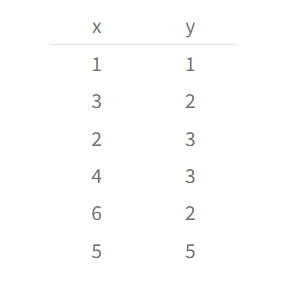
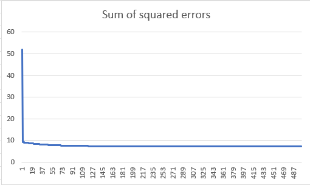

Linear Regression searches the line which best fits the dataset. Minimum Squares will be used in this example. The method consists in minimizing the sum of squared errors.
DATA
To apply the algorithm we need for our dataset. A simple example like this is enough:
Whit this values we can now apply the algorithm.

CONTEXT
It is assumed a linear relation between x and y values. This means two parameters must be adjust, the slope and the independent coefficient. The error of each point is defined as the difference between the y value of the dataset and the prediction of the linear model. Suming the square error for each point, we arrive to the function we want to minimize.
We need to compute its derivatives with respect to m and b.
Finding m and b values which minimizes F, implies solving the linear sistem of equations resultant of equaling F derivatives to 0. This results in the formulas presented:
Now, the only thing in the procedure is just to apply this formula in the dataset.

RESULTS
If we input the data to the formulas, this are the resulting values:
The graphic is the result of comparing both the dataset and the data predictions over the input